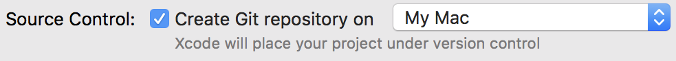

Het bijhouden van wijzigingen binnen Xcode-projecten is een belangrijke vaardigheid voor iedere ontwikkelaar. Want het veiligstellen van goed werkende projecten én het terughalen van eerdere versies kunnen je achteraf veel tijd en ergernis schelen. Dus is het direct koppelen van Xcode projectmappen aan specifieke, synchroniserende mappen in Github is voor ieder van ons essentieel.
Alle werkzaamheden die je in Xcode uitvoert worden consequent lokaal in je projectmap opgeslagen. Dit houdt je projecten en de bijbehorende bestanden overzichtelijk op je Mac paraat, maar deze bundeling op maar één plek heeft ook grote nadelen. Wanneer je in je project een aanpassing doet die de werking van je project om zeep helpt zal een koppeling tussen Xcode en Github direct je beste vriend zijn. Github biedt je de namelijk mogelijkheid om opvolgende en verschillende versies van je project extern op te slaan. Gaat er iets mis, dan kun je daar later altijd op terughalen.
Github is een open source initiatief dat door ontwikkelaars en softwarebedrijven als de standaard voor versiecontrole en onderlinge samenwerking wordt gezien. Github regelt door middel van externe opslag en syncronisatie de controle over verschillende versies van in ontwikkeling zijnde software. Ook biedt Github mogelijkheden om met verschillende ontwikkelaars aan hetzelfde project te werken. Github maakt iedere bijdrage aan een project aan iedereen zichtbaar.
Github is een opslagdienst die softwareprojecten georganiseerd vastlegt en toegankelijk maakt. Dit gebeurt met een eerste overdracht van alle projectbestanden, gevolgd door meerdere kleine en grote wijzigingen. Dit gaat niet automatisch. Iedere ontwikkelaar bepaalt zelf wanneer hij/zij de relevante bestanden toevoegt. Github maakt gebruik van zeer geavanceerde algoritmen om de bestanden met elkaar te vergelijken, te splitsen of samen te voegen. Per wijziging of toevoeging geeft de gebruiker aan wat de wijzigingen inhouden zodat er log-bestand ontstaat met opeenvolgende wijzigingen in bijbehorende bestanden. Github wordt door miljoenen ontwikkelaars gebruikt en biedt ook de mogelijkheid om met meerdere ontwikkelaars samen aan hetzelfde project te werken.
Xcode laat zich gemakkelijk met Github verbinden waardoor het heen en weer sturen van projectbestanden binnen Xcode kan gebeuren. Als je meer ervaring met Github hebt opgedaan zal de snelheid van de command line jouw voorkeur hebben, maar vooralsnog concentreren we ons op de directe koppeling met Xcode voor je eigen projecten.
Om een nieuw project op Github aan te maken, maak je eerst een project op je Mac aan. Voor het opslaan geeft je aan dat je Source Control inschakelt door de optie “Create Git repository on (My Mac)” aan te vinken.

Xcode legt het volledige project in zijn eigen lokale projectmap vast. Wanneer je wijzigingen aan het project aanbrengt door code toe te voegen of een extra knop in je Storyboard te plaatsen kun je, als deze aanvullingen goed werken, wegschrijven via het menu Source Control. Dan verschijnt er een nieuw scherm waar je moet opgeven waarom je deze versie wegschrijft. Je kunt hier vermelden dat je dit deel van het project vastlegt omdat je een Storyboard gemaakt hebt, je een functie hebt toegevoegd of een afbeeldingen hebt toegevoegd. Deze wijzigingen worden aan jouw persoon gekoppeld en van een tijdstip voorzien. Zo ontstaat er een logbestand waarin je terug kunt kijken en op vorige versies kunt teruggrijpen. Als je alle informatie hebt ingevuld, drukt je op de knop “Commit 1 file” en de wijziging wordt vastgelegd en opgenomen in je lokale projectmap en projectlogbestand. Wanneer deze systematiek voor je eigen lokale projecten naar behoren werkt, komt onze volgende stap, de koppeling van Xcode met Github, aan de orde.
Voordat je projecten via Github kunt synchroniseren moet je je registreren. Onder één account kun je ook bij een gratis account meerdere projecten plaatsen. Elk project krijgt op Github een eigen map waarmee een rechtstreekse koppeling met Xcode wordt gemaakt. Zo houd je een goed overzicht van alle projecten en heb je bij calamiteiten altijd een goede terugvalpositie.
Wanneer je account is aangemaakt, meld je je met je naam en wachtwoord opnieuw aan en krijg je toegang tot Github. Nu druk je op het drop-down menu naast je accountnaam. Hier kies je “Create new repository” (Maak een nieuwe projectmap aan). Geef deze de naam van je huidige project en klik op “Create repository”(“Leg de projectmap vast”). Github maakt nu onder jouw account deze map aan. Vervolgens krijg je een unieke link naar deze map te zien. Kopieer deze link volledig en ga terug naar Xcode.
Koppeling met projectmap op Github maken:
Weer terug in Xcode ga je naar Source Control en selecteer je onder “Working Copies” het actieve project dat gekoppeld moet worden. Als je dit selecteert, verschijnt er een volgend menu. Daar kies je “Configure…” gevolgd door de naam van het project die Xcode automatisch invult. Xcode laat nu de actieve projectmap op je eigen Mac zien. Jij wilt een koppeling maken met de aangemaakte projectmap op Github. Daarvoor kies je bovenaan het scherm naast Info voor “Remotes”. Je klikt op de + (plus-teken) links onderaan het scherm. Nu verschijnt er een scherm met “Add remote” en “Create new remote”. Jij kiest voor “Add remote”. Er verschijnt een nieuw scherm “Add a Remote” waarin de naam van de Github projectmap (Github/Mijn projectnaam) typt. In het “Address” plak je nu de URL-link naar jouw Github projectmap die al op je klembord staat. Klik nu op “Add Remote”, Xcode legt de koppeling vast en laat in een overzicht een kluis-icoon zien waarin de koppeling naar de desbetreffende projectmap op Gihub nu veilig bewaard wordt.
Nu deze koppeling actief is, kun je de inhoud van de hele projectmap op je Mac naar Github overzetten. Ga in Xcode naar “Source Control” en kiest “Commit”. In het onderste veld type je in dat het om de eerste overdracht gaat. Vul hier “Initial Commit” in. Zorg dat je het vinkje “Push to remote” met de overeenkomstige projectmap actief hebt gezet. Hierna wordt je gevraagd je inloggegevens voor Github in te voeren. Daarna verplaatst Xcode alle bestanden vanuit je projectmap op je Mac naar de projectmap op Github.
Het overzetten van wijzigingen in je bestanden in je lokale XCode projectmap gaat niet vanzelf. Daarvoor gebruik je Source Control. Wanneer je een goed werkende versie van je app gereed hebt, is het verstandig deze naar Github over te zetten. Dit doe je door in het Xcode menu “Source Control” voor ‘Push” te kiezen. Alle gewijzigde bestanden worden dan overgezet. Regelmatig gericht pushen zorgt ervoor dat je altijd op een goedwerkende versie kunt terugvallen, mocht er onverhoopt iets in je project of in je Mac mis gaan.
Mocht je op een vorige versie willen teruggrijpen, kies je voor de optie “Pull”. Hiermee trek je alle op Github geplaatste projectbestanden terug in je projectmap op je Mac. Feitelijk ga je terug in de tijd zoals een back-up via Timemachine. Alle actuele projectbestanden worden overschreven door de oudere versie op Github.